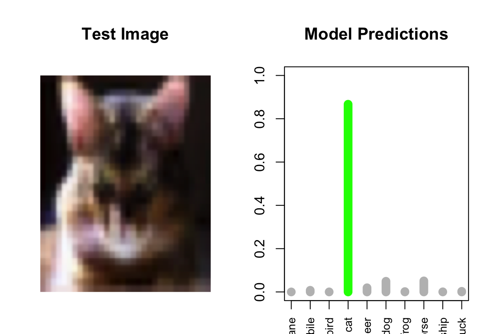

# Install the required packages
install.packages("pak")
pak::pak("jtleek/scorcher")
install.packages(c("torch", "torchvision"))scorcher: Find Cats on the Internet with CNNs in R
Breathe in, breathe out. We’re going to embark on a journey to understand a cool R package called scorcher. But before we dive into the code, we’ll start with the very basics of how a computer can “see” and “understand” images, which is the magic behind Convolutional Neural Networks (CNNs).
And yes, we’ll be teaching computers to find cats on the internet. Because what else is the internet for? 🐱
Part 1: The Building Blocks - Understanding How Computers “See”
Imagine you’re teaching a child to recognize a cat. You wouldn’t just show them one picture and expect them to get it right every time. You’d show them many different cats: big ones, small ones, fluffy ones, grumpy ones, and ones that somehow fit in impossibly small boxes. In a way, this is how we train a computer.

What’s in a Picture? Pixels!
A computer sees an image as a grid of numbers called pixels. For a color image, each pixel has three numbers representing its Red, Green, and Blue (RGB) values, each ranging from 0 to 255. So, a 32x32 pixel color image is actually a 3D grid of numbers with dimensions 32 x 32 x 3.
Our goal? Teach the computer to look at this big grid of numbers and say, That’s definitely a cat plotting world domination!“

The Core Idea: Convolutions (with some Math!)
A Convolutional Neural Network (CNN) is essentially a very sophisticated cat detector (among other things). It finds patterns in images by focusing on key features, like pointy ears, whiskers, or that distinctive “I knocked your coffee off the table” expression.
A convolution applies a filter (or kernel) to an image to create a feature map. Think of it like a cat-feature detector sliding across the image going “Whiskers? Nope. Pointy ears? Maybe. Attitude? Definitely!”
Let’s break down the calculation. Imagine we have a small 5x5 grayscale image patch and a 3x3 filter designed to detect edges:
Image Patch (Input Pixels):
\[\begin{pmatrix} 10 & 20 & 30 & 80 & 90 \\ 15 & \textbf{25} & \textbf{35} & \textbf{45} & 95 \\ 20 & \textbf{30} & \textbf{50} & \textbf{55} & 100 \\ 25 & \textbf{40} & \textbf{60} & \textbf{70} & 105 \\ 30 & 50 & 70 & 80 & 110 \end{pmatrix}\]
Filter / Kernel (Our Edge Detector):
\[\begin{pmatrix} 1 & 0 & -1 \\ 0 & 1 & 0 \\ -1 & 0 & 1 \end{pmatrix}\]
The Calculation:
Placement: We place the filter over the middle 3x3 section of the image patch.
Element-wise Multiplication: We multiply each pixel value by the filter value in the same position. \[\begin{pmatrix} 25 \times 1 & 35 \times 0 & 45 \times -1 \\ 30 \times 0 & 50 \times 1 & 55 \times 0 \\ 40 \times -1 & 60 \times 0 & 70 \times 1 \end{pmatrix} = \begin{pmatrix} 25 & 0 & -45 \\ 0 & 50 & 0 \\ -40 & 0 & 70 \end{pmatrix}\]
Summation: We add all the results together. \[25 + 0 - 45 + 0 + 50 + 0 - 40 + 0 + 70 = 60\]
Create Feature Map: This sum,
60, becomes the first pixel in our new feature map. We then slide the filter one position to the right and repeat. It’s like a very mathematical game of “Where’s Whiskers?”
Making Sense of Features: ReLU and Pooling
ReLU (Rectified Linear Unit): This activation function is basically the network’s way of staying positive. It replaces all negative numbers with zero. The rule is simple: if \(x\) is the input, the output is \(\max(0, x)\).
60→max(0, 60)→60✅-15→max(0, -15)→0(No negative vibes allowed!)
Max Pooling: This step makes our feature maps smaller and more manageable. We slide a small window (e.g., 2x2) over the feature map and keep only the largest number from each window. It’s like saying, “If there’s even a hint of a cat ear in this area, we’ll remember it!”
Example - 2x2 Window on a Feature Map: \[\begin{pmatrix} \textbf{60} & \textbf{12} \\ \textbf{35} & \textbf{55} \end{pmatrix}\]
The output for this section is 60 - the maximum value. This effectively says, “A strong cat-like feature was detected somewhere in this area!”
Part 2: scorcher - Finding Cats with CIFAR-10
Now let’s use scorcher to build our cat detector. We’ll use the CIFAR-10 dataset, which contains 60,000 tiny (32x32) color images of 10 different classes including cats! The other classes are airplanes, cars, birds, deer, dogs, frogs, horses, ships, and trucks. But let’s be honest, we’re mostly here for the cats.
Installation (One-time Setup)
Step 1: Loading Libraries and Preparing the Data
# Load the necessary libraries
library(scorcher)
library(torch)
library(torchvision)
# Set a random seed for reproducibility (because even cats appreciate consistency)
set.seed(42)# Load the CIFAR-10 dataset
train_data <- cifar10_dataset(
root = tempdir(),
download = TRUE,
transform = transform_to_tensor
)
# The dataset is a list-like object, we need to access items individually
# Let's get the first item to check dimensions
first_item <- train_data[1]
cat("Number of training images:", length(train_data), "\n")Number of training images: 50000 cat("Image dimensions:", dim(first_item[[1]]), "\n")Image dimensions: 3 32 32 # The class names (SPOILER ALERT: cats are class 4)
class_names <- c("airplane", "automobile", "bird", "cat", "deer",
"dog", "frog", "horse", "ship", "truck")
# Count unique classes by sampling some items
sample_labels <- sapply(1:100, function(i) as.integer(train_data[i][[2]]))
cat("Number of classes:", length(unique(sample_labels)), "\n")Number of classes: 10 # Convert data to tensors
# Since torchvision returns data already as tensors, we need to collect them
# This might take a moment as we're loading all 50,000 images
cat("Preparing training data... this might take a moment...\n")Preparing training data... this might take a moment...# Initialize lists to store data
x_list <- list()
y_list <- list()
# Load all training data (you might want to use a subset for testing)
n_samples <- length(train_data) # or use a smaller number like 5000 for testing
for (i in 1:n_samples) {
item <- train_data[i]
x_list[[i]] <- item[[1]]
y_list[[i]] <- item[[2]]
# Show progress every 10000 images
if (i %% 10000 == 0) {
cat("Loaded", i, "images...\n")
}
}Loaded 10000 images...
Loaded 20000 images...
Loaded 30000 images...
Loaded 40000 images...
Loaded 50000 images...# Stack all tensors
x_train <- torch_stack(x_list)
# For labels, we need to ensure they're 1D by using torch_cat instead of torch_stack
y_train <- torch_cat(y_list)
# Check the shapes
cat("Training data shape:", dim(x_train), "\n")Training data shape: 50000 3 32 32 cat("Training labels shape:", dim(y_train), "\n")Training labels shape: 50000 cat("Label tensor dimension:", length(dim(y_train)), "D\n")Label tensor dimension: 1 DStep 2: Creating a Data Loader
The data loader is like a waiter that serves our neural network bite-sized portions of data instead of the whole buffet at once.
# Create the DataLoader to feed data in batches
dl <- scorch_create_dataloader(
x_train,
y_train,
batch_size = 500 # 500 images at a time - a purrfect serving size
)
cat("DataLoader created! Ready to serve", ceiling(length(train_data)/500),
"batches of cat pics (and other things).\n")DataLoader created! Ready to serve 100 batches of cat pics (and other things).Step 3: Defining the Neural Network Architecture
Time to build our CNN! Think of this as assembling a sophisticated cat-detection machine, layer by layer.
# Define the Neural Network
scorch_model <- dl |>
initiate_scorch() |>
# First convolutional layer: 3 input channels (RGB) → 32 feature detectors
scorch_layer("conv2d",
in_channels = 3, # RGB channels
out_channels = 32, # 32 different cat-feature detectors
kernel_size = 3) |> # 3x3 filter size
scorch_layer("relu") |> # Stay positive!
# Second convolutional layer: 32 → 64 feature detectors
scorch_layer("conv2d",
in_channels = 32, # From previous layer
out_channels = 64, # Even more cat detectors!
kernel_size = 3) |>
scorch_layer("relu") |>
# Max pooling to reduce size
scorch_layer("max_pool2d", kernel_size = 2) |> # "Zoom out" by factor of 2
# Flatten the feature maps to a vector
scorch_layer("flatten") |>
# Add a fully connected layer to classify into 10 classes
# After conv1: 32x32 → 30x30, conv2: 30x30 → 28x28, pool: 28x28 → 14x14
# So we have 64 channels × 14 × 14 = 12,544 features
scorch_layer("linear", in_features = 64 * 14 * 14, out_features = 128) |>
scorch_layer("relu") |>
# Final classification layer
scorch_layer("linear", in_features = 128, out_features = 10) # 10 classes in CIFAR-10
cat("Model architecture defined! Our cat detector has been assembled.\n")Model architecture defined! Our cat detector has been assembled.cat("Note: After 2 conv layers and pooling, a 32x32 image becomes 14x14 with 64 channels.\n")Note: After 2 conv layers and pooling, a 32x32 image becomes 14x14 with 64 channels.Summary of the Cat Detector’s Brain
Think of the neural network you built as a machine with two main parts: a super-powered set of Eyes to spot patterns and a Brain to make a final decision.
Part 1: The “Eyes” - Spotting Cat-Like Things
This is where the model learns to see. It doesn’t see a whole cat at first, but rather learns to find the little pieces that make up a cat.
First Glance (First
conv2dlayer): The model slides dozens of tiny “magnifying glasses” over the image. Each one is designed to find just one simple thing, like a straight edge (a whisker?), a sharp curve (an ear tip?), or a patch of a certain color. It creates 32 mini-maps showing where it found these basic clues.Putting Clues Together (Second
conv2dlayer): Now, the model uses a set of 64 smarter magnifying glasses. These look at the simple mini-maps from the first step and search for combinations. For example, it might learn that “a sharp curve” next to “a fuzzy patch” often means “ear.” It builds a more complex understanding of the image’s textures and shapes.Squinting to Get the Gist (The
max_pool2dlayer): After finding all these details, the model “squints.” It looks at small regions of the image and just remembers the most important or obvious clue it found there. This step is crucial because it helps the model recognize a cat whether it’s on the left or right side of the picture, and it simplifies the problem by summarizing the findings.
At the end of this “Eyes” phase, the model hasn’t seen a “cat” yet, but it has a very good idea of all the cat-like shapes, edges, and textures present in the image.
Part 2: The “Brain” - Making the Final Call
This is where the model takes all the visual evidence and makes a decision.
Lining Up the Evidence (The
flattenlayer): The model takes all its different 2D maps of clues and lays them out in one single, super-long line. This gets all the information ready for the final analysis.Weighing the Evidence (First
linearlayer): This layer acts like a detective looking at the long line of evidence. It learns to weigh which clues are most important. It might learn that “pointy ears” and “whiskers” are very strong indicators of a cat, while “wheels” or “wings” are strong indicators of not a cat. It combines all 12,544 clues into 128 main points.The Final Vote (Second
linearlayer): This last layer takes the 128 main points from the detective and casts a final vote. It gives a score to each of the 10 possible categories (“airplane,” “automobile,” “bird,” “cat,” etc.)
The category that gets the highest score is the model’s final answer.
Step 4: Compiling and Training the Model
Now comes the fun part - teaching our model the ancient art of cat recognition!
# Compile the model (prepare it for training)
compiled_scorch_model <- compile_scorch(scorch_model)
cat("Model compiled and ready for training! Let the learning begin...\n")Model compiled and ready for training! Let the learning begin...# Train the model!
fitted_scorch_model <- compiled_scorch_model |>
fit_scorch(
loss = nn_cross_entropy_loss, # How wrong are we?
num_epochs = 10, # 5 full passes through the data
verbose = TRUE # Show training progress
)
# Save the entire fitted model object to the file
torch_save(fitted_scorch_model, "cat_detector_model.pt")cat("\n🎉 Training complete! Your model is now a certified cat expert.\n")
🎉 Training complete! Your model is now a certified cat expert.The loss value should decrease with each epoch, indicating that your model is getting better at distinguishing cats from non-cats. It’s like watching a kitten learn to hunt - clumsy at first, but gradually becoming a precision predator!
Step 5: Testing Our Cat Detector!
Let’s see if our model can actually find a cat:
# Load test data
test_data <- cifar10_dataset(
root = tempdir(),
train = FALSE,
download = TRUE,
transform = transform_to_tensor
)
# Function to find a cat in the test set
# find_cat_index <- function(test_data, start_idx = 1) {
# for (i in start_idx:length(test_data)) {
# if (as.integer(test_data[i][[2]]) == 3) {
# return(i)
# }
# }
# return(NULL)
# }
# Find a cat image
cat_idx <- 559
cat("Found a cat at index", cat_idx, "! Let's test our model...\n\n")Found a cat at index 559 ! Let's test our model...# Get the cat image
test_item <- test_data[cat_idx]
test_image <- test_item[[1]]
test_label <- as.integer(test_item[[2]])
# Prepare for prediction
test_input <- test_image |> torch_unsqueeze(1)
# Make prediction
with_no_grad({
prediction <- fitted_scorch_model(test_input)
})
# Get predicted class
predicted_probs <- nnf_softmax(prediction, dim = 2)
predicted_class <- as.integer(torch_argmax(prediction, dim = 2))
# Visualize the result
par(mfrow = c(1, 2), mar = c(2, 2, 4, 2))
# Helper function to convert an image tensor for plotting
tensor_to_img <- function(tensor) {
# Convert tensor to R array and move dimensions for plotting
# from (Channels, Height, Width) to (Height, Width, Channels)
aperm(as.array(tensor$cpu()), c(2, 3, 1))
}
# Show the image
img_array <- tensor_to_img(test_image)
plot(1, type = "n", xlim = c(0, 1), ylim = c(0, 1),
axes = FALSE, xlab = "", ylab = "",
main = "Test Image")
rasterImage(img_array, 0, 0, 1, 1)
# Show prediction results
plot(1:10, as.numeric(predicted_probs[1, ]),
type = "h", lwd = 10,
col = ifelse(1:10 == (predicted_class), "green", "gray"),
xlab = "", ylab = "Probability",
main = "Model Predictions",
xaxt = "n", ylim = c(0, 1))
axis(1, at = 1:10, labels = class_names, las = 2, cex.axis = 0.8)
# Print results
cat("\n🎯 PREDICTION RESULTS:\n")
🎯 PREDICTION RESULTS:cat("True label:", class_names[test_label], "\n")True label: cat cat("Predicted:", class_names[predicted_class], "\n")Predicted: cat if (predicted_class == test_label && test_label == 4) {
cat("Is that really a cat? 🎉 MEOW-VELOUS! Our model correctly identified the cat! 😺\n")
} else if (predicted_class == test_label) {
cat("✅ Not a cat but still a Correct Prediction!\n")
} else {
cat("❌ Oops, the model got confused. More training needed!\n")
}Is that really a cat? 🎉 MEOW-VELOUS! Our model correctly identified the cat! 😺Part 3: Customizing Your Cat Detector with scorcher
The beauty of scorcher is how easy it is to experiment. Here are some modifications you can try:
Option 1: The Speed Demon (Fewer Filters)
For when you need results meow, not later:
# A simpler, faster model with fewer filters
speed_demon_model <- dl |>
initiate_scorch() |>
scorch_layer("conv2d", in_channels = 3, out_channels = 8, kernel_size = 3) |>
scorch_layer("relu") |>
scorch_layer("conv2d", in_channels = 8, out_channels = 16, kernel_size = 3) |>
scorch_layer("relu") |>
scorch_layer("max_pool2d", kernel_size = 2) |>
scorch_layer("flatten") |>
scorch_layer("linear", in_features = 16 * 14 * 14, out_features = 64) |>
scorch_layer("relu") |>
scorch_layer("linear", in_features = 64, out_features = 10)- This model trains faster but might miss some subtle cat features
Option 2: The Perfectionist (Larger Filters)
For capturing those complex feline features:
# A model with larger filters to see bigger patterns
perfectionist_model <- dl |>
initiate_scorch() |>
scorch_layer("conv2d", in_channels = 3, out_channels = 32, kernel_size = 5) |>
scorch_layer("relu") |>
scorch_layer("conv2d", in_channels = 32, out_channels = 64, kernel_size = 5) |>
scorch_layer("relu") |>
scorch_layer("max_pool2d", kernel_size = 2) |>
scorch_layer("flatten") |>
# Note: 5x5 kernels reduce dimensions more
# After conv1: 32x32 → 28x28, conv2: 28x28 → 24x24, pool: 24x24 → 12x12
scorch_layer("linear", in_features = 64 * 12 * 12, out_features = 128) |>
scorch_layer("relu") |>
scorch_layer("linear", in_features = 128, out_features = 10)- Larger filters = seeing the bigger picture (literally)
Part 4: Exercises with scorcher with Solutions
Time to test your newfound knowledge! Remember: curiosity might have killed the cat, but satisfaction brought it back.
Exercise 1: The Impatient Trainer
You’re in a hurry (maybe your cat is demanding attention) and want results faster. Modify the training code to: - Run for 10 epochs - Use a larger batch size of 1024
🐾 Click for Solution
# Step 1: Create a new dataloader with larger batch size
dl_impatient <- scorch_create_dataloader(
x_train,
y_train,
batch_size = 1024 # Bigger batches = faster training
)
# Step 2: Build the model with the new dataloader
model_impatient <- dl_impatient |>
initiate_scorch() |>
scorch_layer("conv2d", in_channels = 3, out_channels = 32, kernel_size = 3) |>
scorch_layer("relu") |>
scorch_layer("conv2d", in_channels = 32, out_channels = 64, kernel_size = 3) |>
scorch_layer("relu") |>
scorch_layer("max_pool2d", kernel_size = 2) |>
scorch_layer("flatten") |>
scorch_layer("linear", in_features = 64 * 14 * 14, out_features = 128) |>
scorch_layer("relu") |>
scorch_layer("linear", in_features = 128, out_features = 10)
# Step 3: Compile and train for 15 epochs
compiled_impatient <- compile_scorch(model_impatient)
fitted_impatient <- compiled_impatient |>
fit_scorch(
loss = nn_cross_entropy_loss,
num_epochs = 10, # More epochs for better accuracy
verbose = TRUE
)
cat("Speed training complete! Your cat probably finished their nap.\n")Exercise 2: Build a Deeper Network
Make your network “deeper” by adding another set of convolutional layers. The new layer should: - Take 64 channels as input - Produce 128 feature maps as output - Include ReLU activation and max pooling
🐾 Click for Solution
# Define a DEEPER Neural Network (for finding even sneakier cats)
deeper_model <- dl |>
initiate_scorch() |>
# Layer 1: Basic cat features
scorch_layer("conv2d", in_channels = 3, out_channels = 32, kernel_size = 3) |>
scorch_layer("relu") |>
# Layer 2: More complex patterns
scorch_layer("conv2d", in_channels = 32, out_channels = 64, kernel_size = 3) |>
scorch_layer("relu") |>
scorch_layer("max_pool2d", kernel_size = 2) |>
# --- NEW LAYERS ---
# Layer 3: Expert-level cat detection
scorch_layer("conv2d", in_channels = 64, out_channels = 128, kernel_size = 3) |>
scorch_layer("relu") |>
scorch_layer("max_pool2d", kernel_size = 2) |>
# Flatten and classify
scorch_layer("flatten") |>
# After conv1: 32→30, conv2: 30→28, pool: 28→14, conv3: 14→12, pool: 12→6
# So we have 128 channels × 6 × 6 = 4,608 features
scorch_layer("linear", in_features = 128 * 6 * 6, out_features = 256) |>
scorch_layer("relu") |>
scorch_layer("linear", in_features = 256, out_features = 10)
# Compile and train as before
compiled_deeper <- compile_scorch(deeper_model)
cat("Deeper model created! Now with 3 layers of cat-detection power.\n")Exercise 3: Test Your Cat Detector
Your friend sends you a mystery image from the CIFAR-10 test set. Use your trained model to identify it!
🐾 Click for Solution
# Step 1: Load the test data
test_data <- cifar10_dataset(
root = tempdir(),
train = FALSE, # Important: use the test set!
download = TRUE,
transform = transform_to_tensor
)
# Step 2: Pick a test image (let's try the 5th one)
test_image_index <- 5
test_item <- test_data[test_image_index]
single_image <- test_item[[1]] |>
torch_unsqueeze(1) # Add batch dimension
# Step 3: Get the true label
true_label <- as.integer(test_item[[2]])
true_class <- class_names[true_label + 1] # R uses 1-based indexing
cat("The mystery image is actually a:", true_class, "\n")
# Step 4: Make a prediction
prediction <- fitted_scorch_model(single_image)
predicted_class_index <- as.integer(torch_argmax(prediction, dim = 2))
predicted_class <- class_names[predicted_class_index + 1]
# Step 5: Check the results
cat("Our model thinks it's a:", predicted_class, "\n\n")
if (predicted_class == true_class) {
if (predicted_class == "cat") {
cat("✨ Purrfect! The model correctly identified the cat! 😺\n")
} else {
cat("✅ Correct! Though it wasn't a cat... 🤔\n")
}
} else {
if (true_class == "cat") {
cat("😿 Oh no! The model missed a cat! Time for more training.\n")
} else {
cat("❌ Oops! Wrong answer, but at least it wasn't a cat we missed.\n")
}
}Conclusion
Congratulations! You’ve successfully built a CNN that can find cats on the internet using R and scorcher. You’ve learned:
- How computers “see” images as grids of numbers
- How convolutions work to detect features
- How to build and train a CNN using
scorcher - How to make your model faster or more accurate
Remember: With great computational power comes great responsibility. Use your cat-detection skills wisely!
And if your model isn’t purrfect yet, don’t worry - even cats need nine lives to get things right. Keep experimenting with different architectures, and soon you’ll have a model that’s the cat’s meow! 🐱
Happy coding, and may your loss always be decreasing and your cats always be detected!